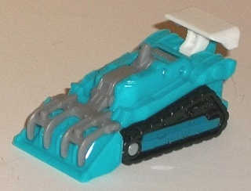
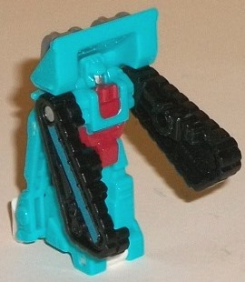
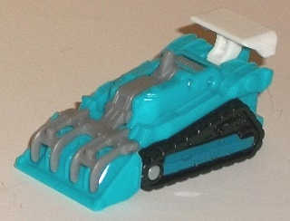
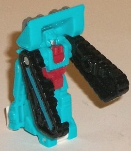
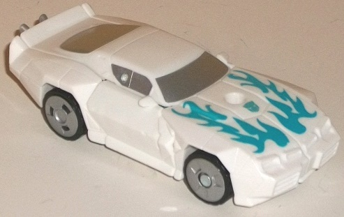
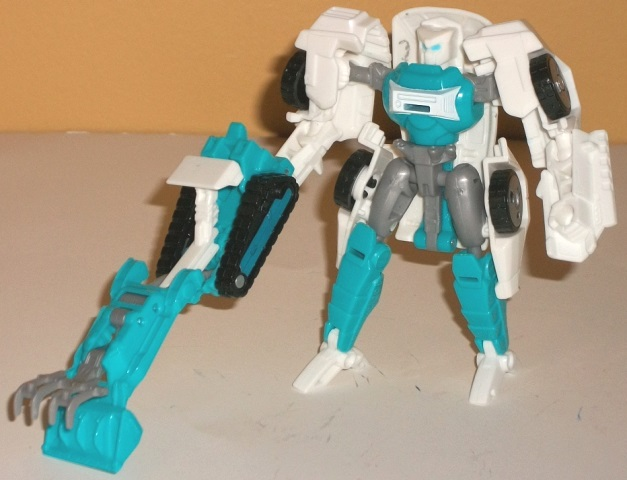

 
Difficulty of Transformations : Very Easy
Color Scheme : Light aquamarine, black, and some white, milky gray, silver, moderately dark dull blue, and moderately dark dull red
Individual Rating : 3.9
Allegiances
: Autobot
Size
: Legends 2-pack
 Groundbuster
Groundbuster


Difficulty of Transformations
: Very
Easy
Color Scheme
: Light aquamarine,
black, and some white, milky gray, silver, moderately dark dull blue, and
moderately dark dull red
Individual Rating
: 3.9
Groundbuster's vehicle
mode is a treaded... well, I initially thought it was some sort of remotely-operated
bulldozer without a cockpit, but searching the web, it's actually apparently
a bomb disposal skid loader. This actually fits with his bigger buddy Tailgate
extremely well, given that Tailgate initially had "Bomb Disposal" written
on one of his arms in the More Than Meets the Eye IDW comic series, on
which the larger toy design in this 2-pack is based. But getting back to
Groundbuster, The proportions for vehicle mode look pretty good, with no
robot extras visible to boot. The color scheme-- though it fits with Tailgate--
is a bit odd for the vehicle, being mostly light aquamarine with a bit
of black, gray, and white to provide some neutral contrast against a color
that hasn't been common since the late '80s/early '90s on Transformers.
These other colors do break up the aquamarine a fair bit, though, so despite
there being little paint detailing on this mode beyond the dull blue on
the treads, there isn't one large area that's only one color of plastic.
The mold detailing is also quite impressive, with even little things like
rivets, very intricate mold detailing on the treads, and little "comber"
forks on the front looking quite nice.
To transform Groundbuster
to his weapon mode, you simply fold down the peg on the rear of his vehicle
mode and then extend the front section out and forward, making Groundbuster
a sort of long claw weapon. It certainly looks a bit odd-- and, scale-wise,
is a bit long for the larger figures in these 2-packs-- but the gray "forks"
on the front (now raised up) and the front shovel make for a fairly convincing
claw. The gray forks can move up or down a bit, though they fall back down
to their default position (seen in the pics below, w/ Tailgate's robot
mode) pretty easily once you let go of them.
Groundbuster's robot
mode is literally his vehicle mode stood up on its back end. This is the
poorest of his three modes, if you ask me; all of his robot mode bits are
simply detailed on the underside of the vehicle, and almost none of those
parts move forward out of the vehicle's "shadow". The sole exception to
this rule are his arms, which are made from his treads and can move back-and-forth
at the shoulders-- however, the tread-arms are a bit too oddly long and
bulky at the ends, and the fists are merely molded into the tread pieces
as well. Some of this is certainly understandable at such a small scale,
but having better-proportioned arms and a head that isn't partially "covered
up" by the front of the vehicle mode isn't too much to ask, I think. The
dull red and silver bits on Groundbuster's main body and head add a bit
more to his color scheme, and they contrast quite well against the aquamarine--
even though they aren't used much, I'm glad they're at least used some
to add a little more variety.
Groundbuster is the
worst mold out of the smaller 'bots in these "Thrilling 30th" Legends 2-packs.
His vehicle mode looks pretty good-- if oddly colored-- but his weapon
is a bit of a stretch and overly long when used with the larger Legends
figures. His robot mode is especially weak, being just molded onto the
bottom of his vehicle mode and having oddly-proportioned arms. This guy's
easily skippable unless you're a completist.
 Autobot
Tailgate
Autobot
Tailgate


Difficulty of Transformation:
Easy
Color Scheme
: White, light aquamarine,
and some silver, black, and milky gray
Individual Rating
: 6.7
Tailgate keeps his G1
alternate mode of a sportscar, but for this version it's been "modernized"
a bit, with more of a rear spoiler and a more streamlined look. The proportions
are great, and there aren't any obvious robot extras in this mode at all;
if you look at it from a rear view, behind the tailpipe piece (which is
a bit large and sticks out oddly from the back end), you can juuust see
Tailgate's upper robot legs, but that's a very minor issue at best. In
this mode Tailgate's mold detailing is very sparse, in keeping with the
"streamlined" look, but he's still got details where it matters, like his
front bumpers, headlights, and taillights all molded with a good amount
of detail. Tailgate is almost entirely white in this mode, with most of
his paint apps being silver on his windows and wheels. These paint apps
look okay, but they don't contrast with the white well enough and would
keep Tailgate looking very bland in this mode-- were it not for the departure
from G1 with the addition of blue flames on the front hood. This aquamarine
really does go with the white marvelously, and the way the flames are tampoed
on looks quite nice. I wish there was a bit MORE blue-- such as on the
sides, perhaps, as Tailgate still looks rather plain near the rear part
of this mode-- but it still helps immensely regardless. Tailgate has a
5mm port in front of his front window for Groundbuster or another "smaller
Legend partner" to plug into in weapon mode if you want to give Tailgate
some weaponry in this mode.
Tailgate's transformation
is pretty straightforward for the most part, with the number of flips and
turns his legs go through being the only thing out-of-the-ordinary on a
Legends toy. Tailgate's robot mode design is heavily based on his appearance
in the
More Than Meets the Eye
IDW comic series, with his relatively
small chest, big optics, and skinny legs. It says something about Tailgate's
surge in popularity from that series that this toy came out first, as opposed
to being used as Windcharger first, since Tailgate until recently was basically
a nobody. Anyways, although I appreciate the effort, Hasbro isn't able
to quite get Tailgate right in this mode, with some proportional and kibble
maladies rearing their ugly heads here. For one, Tailgate's feet are way
too tiny (though he's more stable than you'd think), and though the wheel
bits on the sides of his upper legs help to add some bulk to his skinny
legs, these car kibble pieces are generally unwieldly and can get in the
way-- to say nothing of the vehicle mode section behind Tailgate's back,
which sticks out blatantly behind his head and goes down too far. The large
hinge piece on the crotch-- used for his transformation-- also doesn't
look good, thogh at least it gives him tailpipes on his waist, which is
a nice, unique design choice. Tailgate's shoulders are rather wide, but
this is expected for the design-- what I'm not impressed with are his lower
arms, which are simply molded into the inside of his car door pieces, with
no paint on them at all and slightly restricted articulation at the elbow
because of how both pieces are molded. Tailgate's headsculpt is wonderfully
done and looks very close to his IDW appearance, but it sticks out just
a tad too far back behind his chest, and due to the transformation he can't
rotate said head. Tailgate's more emphasis on blue and the addition of
milky gray in this mode gives his color scheme some needed variation, and
in general his colors are well-spread-out in this mode, with the exception
of his arms, which look pretty much all white in this mode. The mold detailing
remains fairly sparse for a robot mode but again, this is largely in keeping
with his IDW design. For articulation, Tailgate can move at the shoulders
(at two points), elbows (again, a little restricted despite them being
on a ball joint), and at the hips, knees, and ankles, with the hips being
a little restricted because of all the kibble around them. As you'd expect,
Tailgate can hold Groundbuster any other 5mm port-compatible weapon in
either of his fist holes in this mode.
Tailgate is the most
awkward of the "Thrilling 30" larger Legends molds. His vehicle mode looks
great (if a tad under-painted), but his robot mode has several big issues,
particularly when it comes to unsightly kibble that interferes with articulation
and some odd proportional issues like his head being a little too far behind
his chest.
The Generations Tailgate w/ Groundbuster Legends 2-pack is my least-recommended Legends 2-pack out of all the "Thrilling 30" releases, easily. Both Tailgate and his little buddy Groundbuster are the weakest molds of their respective sizes in this segment of the line, having pretty good vehicle modes but weak and/or awkward robot modes. If you're a huge fan of Tailgate, this may be worth a pickup, keeping the reservations about Tailgate's robot mode in mind. Otherwise, skip this set.
Reviews by Beastbot